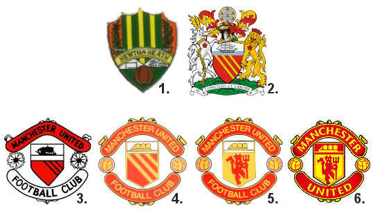

Historia Klubowa1878-1909 Manchester United Football Club został założony w 1878 roku, lecz wówczas występował pod inną nazwą – Newton Heath LYR (Lancashire and Yorkshire Railway). Marząc o wywarciu wpływu na krajową, a nawet światową piłkę, robotnicy kolejowi z Newton Heath połączeni pasją do futbolu rozpoczęli organizowanie meczów między oddziałami firm kolejowych. Kiedy w 1888 roku uformowała się Football League, Newton Heath nie był klubem na tyle silnym i bogatym jak inne, więc nie mógł zostać założycielem ligi. Tę zaś utworzyli Blackburn Rovers oraz Preston North End. Klub musiał poczekać do 1892 roku, by przystąpić do rozgrywek. Za Newton Heath ciągnęły się długi. 